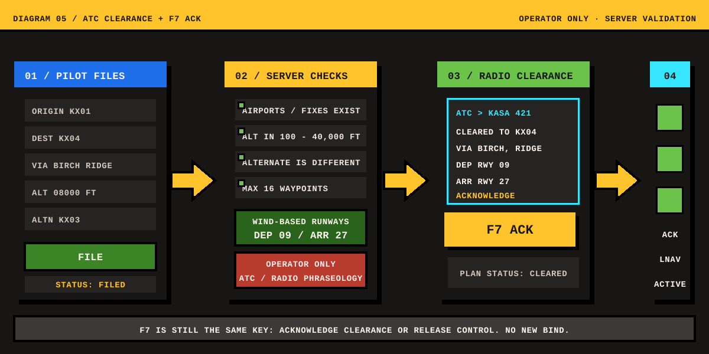

Radar scope
4096-block radar range with 128-block air/ground traffic and TCAS contacts. Snapshots are throttled for busy servers.
Operators see the whole sky and can issue real clearances to AI traffic — or take temporary command of a player aircraft with a clean handoff back.
Run /flightline atc to open the controller screen. Normal players cannot open it, set emergency state, or issue orders. Every order is validated on the server.
The real controller screen receives authoritative contact snapshots from the server. Radar reaches 4096 blocks, while TCAS and traffic counts use a 128-block scope.
Snapshots throttle automatically on busy servers so the scope stays readable instead of flooding clients.
Diagram — ATC checks the flight plan, assigns runways, sends the radio clearance and keeps the F7 handoff intact.

F7 acknowledges it.Operator-only access still applies. A release with F7 or RELEASE CTRL returns command to the pilot.
One authoritative contact snapshot is built per dimension and sent to radar clients.
4096-block radar range with 128-block air/ground traffic and TCAS contacts. Snapshots are throttled for busy servers.
Highlight a contact, follow it with the camera, pick a lead aircraft, or select a target from the map.
Hold, turn, climb, descend, speed, orbit, return or follow. Player clearances drive their autopilot; AI clearances drive mob flight control.
RELEASE CTRL in the GUI or F7 from the pilot returns full authority immediately.
Enter a value, issue the order, and the aircraft acknowledges in radio phraseology.
| Order | Valid value | Radio phrase |
|---|---|---|
| HOLD | 0 | Hold present heading and altitude. |
| TURN | 0–359 | Turn heading 090. |
| CLIMB | 100–40,000 ft | Climb and maintain 5000 feet. |
| DESCEND | 100–40,000 ft | Descend and maintain 3000 feet. |
| SPEED | 40–300 kt | Maintain 180 knots. |
| ORBIT | 0 | Orbit my position. |
| RETURN | 0 | Return to my position. |
| FOLLOW | 0 + valid lead | Follow aircraft … |
| RELEASE | 0 | Resume own navigation. |
Climb and descend clearances use ±1,500 fpm. Follow targets must be valid aircraft within controller range.
/flightline atc as an operator.RELEASE CTRL, or let the pilot press F7.Control also drops when the pilot moves throttle or bank manually, changes autopilot settings, engages normal or emergency autoland, crashes, respawns, disables flight, dies, spectates, or leaves the controller's dimension or 2048-block range.
The target must be alive, not the operator, in the same dimension and within 2048 blocks. Player aircraft must be airborne before an operator can take command. A release clears the clearance, disengages autopilot and autoland, and notifies both controller and pilot.